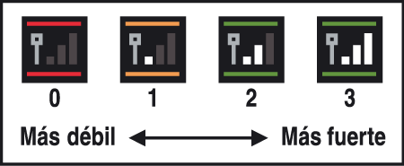

12 |
Equipo necesario para conectar con DS |
 |
A continuación podrás consultar qué necesitas para poder depositar o retirar Pokémon procedentes de Pokémon Edición Diamante o Pokémon Edición Perla.
■ Equipo necesario ● Una consola Nintendo DS o Nintendo DS Lite ● Una tarjeta DS de Pokémon Edición Diamante o Pokémon Edición Perla Nota: No olvides que solo podrás utilizar la versión española de Pokémon Edición Diamante o Pokémon Edición Perla para DS.  Precauciones cuando juegues a través de una red inalámbrica
Ten siempre presente lo siguiente cuando juegues en red:
● El icono de comunicación inalámbrica de Nintendo DS ● El icono de intensidad de la señal inalámbrica 
Nota: Cuando la función inalámbrica esté disponible, el indicador de encendido de la consola Nintendo DS parpadeará a intervalos regulares. ● Para mantener una comunicación óptima entre las consolas, ten en cuenta las siguientes recomendaciones: ・ Mantén una distancia máxima de 10 metros entre la consola Nintendo DS y la consola Wii o una distancia que permita ver al menos dos barras en el icono de intensidad de la señal inalámbrica. ・ Para no interferir en la comunicación entre las consolas, procura que ninguna persona, objeto u obstáculo se interponga entre la consola Nintendo DS y la consola Wii. ・ Si el juego se ve interrumpido por interferencias procedentes de aparatos eléctricos (como hornos microondas o dispositivos inalámbricos), aleja la consola Wii de dichos aparatos o deja de utilizar el dispositivo o dispositivos que estén causando tales interferencias. |
 |
 |
 |